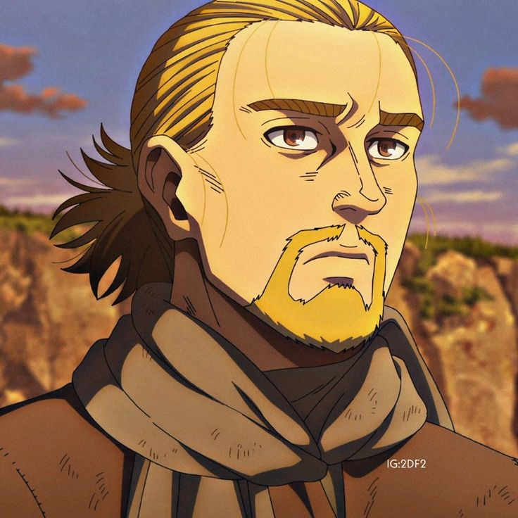

VegVin: Vinland Fórum
Faça parte você também! Descubra o que é um verdadeiro guerreiro!
Após o assassinato do pai, o jovem Thorfinn entra para o bando de mercenários comandado pelo assassino e tenta encontrar a chance perfeita de se vingar.


Bem-vindo,
Olá, hoje é dia , mais uma data para agradecer pela vida e pelo que foi dado hoje!
Curiosidade: Thorfinn existiu de verdade!
O protagonista de Vinland Saga, Thorfinn Karlsefni, é inspirado em uma figura histórica real — um explorador islandês do século XI. Segundo as Sagas Nórdicas, Thorfinn realmente partiu em uma expedição para uma terra chamada Vinland, que os estudiosos acreditam ser a costa da América do Norte (provavelmente o atual Canadá).Thorfinn ficou conhecido por ser um dos primeiros europeus a tentar colonizar o continente americano — quase 500 anos antes de Cristóvão Colombo!
Primeira Temporada
A história se passa na Era dos Vikings, um período marcado por guerras, conquistas e traições. Seguimos Thorfinn, um jovem guerreiro islandês que cresce em meio à brutalidade dos campos de batalha. Movido por um desejo profundo de vingança, ele se junta a um grupo de mercenários e acaba se envolvendo em conflitos políticos entre reinos, especialmente na Inglaterra. A temporada combina ação intensa, cenas épicas de combate e uma narrativa que, além da violência, explora temas como honra, orgulho e o ciclo do ódio.
Segunda Temporada
Já a segunda temporada muda bastante o ritmo e o foco. Com uma abordagem mais reflexiva, ela mostra Thorfinn em uma nova fase da vida, onde é forçado a confrontar seu passado e repensar quem ele é. É uma temporada marcada pelo crescimento pessoal, pela busca de paz e por diálogos mais profundos sobre liberdade, redenção e o verdadeiro significado da força.

FALE CONOSCO
Assunto